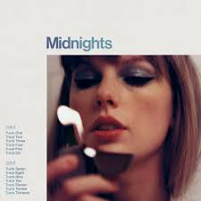
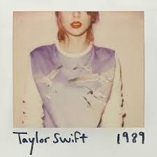
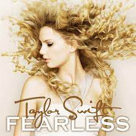

Gallery



.jpeg)
.jpeg)
Taylor Alison Swift is an American singer-songwriter. Her songwriting, artistry, and entrepreneurship have influenced the music industry.Five of her songs, including “Shake It Off” (2014), “Blank Space” (2014), and “Look What You Made Me Do” (2017), topped the Billboard Hot 100. She received a number of awards for her music.
Taylor Swift is an American pop and country music singer-songwriter. Five of her songs, including “Shake It Off” (2014), “Blank Space” (2014), and “Look What You Made Me Do” (2017), topped the Billboard Hot 100. She received a number of awards for her music.
Taylor Swift was born in West Reading, Pennsylvania. When she was 13, her parents sold their family farm in Pennsylvania and moved to Hendersonville, Tennessee, so she could pursue a career in country music in nearby Nashville. Swift signed a deal with Sony/ATV as a songwriter the next year, in 2004.
In 2004, at age 14, Taylor Swift signed a music publishing deal with Sony/ATV, thereby becoming the youngest signing in the company’s history. In 2006 Swift signed with Big Machine Records and scored her first Top 40 hit with “Tim McGraw.” She then released four more singles and a self-titled album.
Taylor Swift is credited as a writer or cowriter on every original song she released. She wrote or cowrote every song on Taylor Swift (2006), Fearless (2008), Red (2012), 1989 (2014), and reputation (2017). She wrote all the songs on her third studio album, Speak Now (2010).
Taylor Swift has released nearly 80 Billboard Hot 100-charting songs. More than 20 songs, including “You Belong with Me” (2009), “Back to December” (2010), “We Are Never Ever Getting Back Together” (2012), “Shake It Off” (2014), “Blank Space” (2014), “Look What You Made Me Do” (2017), and “ME!” (2019), were Top 10 hits.